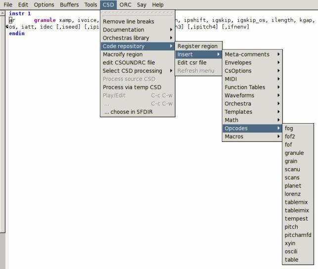

Introduction
One of the great things about Csound is that the format of the
orchestra and score files are pure text. The composer can use any
editor he or she pleases, without being tied to a specific platform.
There are a few text editors specialized in working with Csound such
as the Csound Editor
[1]. In this paper we will see
how to use Emacs as a Csound development environment.
Emacs is a very powerful all-purpose editor. With it one can edit and
manage files, read news, mail, and RSS feeds, and even play Tetris. An
introduction to Emacs is out of the scope of this paper, but there is
plenty of documentation available on-line and also with Emacs itself. The
best place to start is the "Guided Tour of Emacs"
[2]. The Emacs Tutorial is available inside
Emacs, under the Help menu. The "GNU Emacs Manual" can be read on-line
[3] or inside Emacs under the Help
menu. Finally, the Emacs Wiki is a nice place to find things related
to Emacs
[4].
Csound-x is an Emacs library (a mode, in Emacs parlance) that allows
one to compose music for Csound without leaving Emacs. With it one can
run Csound (real time or not), play files, format orchestras and
scores, edit and visualize functions, calculate and edit columns in
scores in the same way as in spreadsheets, access documentation for an
opcode with a keystroke, and so on.
I. Installing and Configuring Csound-x
Csound-x does not come with Emacs, so we need to download and install
it. The latest version of Csound-x can be found at the address listed below
[5]. We must download and unzip it to
a local folder and tell Emacs where to find Csound-x. Emacs stores the
configuration for each user in the file .emacs in the home
directory. Put the following lines in your .emacs, adjusting
the path where Csound-x was unzipped:
(add-to-list 'load-path "~/stef-elisp")
(require 'stef-elisp)
To access the Csound documentation from Emacs, we will need to
download the Csound Manual in HTML format and unzip it. In this paper
I have downloaded it from the address listed below
[6] and
unzipped it in ~/csound/html.
Next, we want to customize Csound-x. We can customize it by editing
.emacs directly or use the emacs custom interface. To use
the custom interface type M-x customize-group RET csound-x
RET. Figure 1 shows the items available for
customization. The option “Csound X Applications Paths'' defines the
value for Csound environment variables such as SADIR and INCDIR.
Figure 1.The Emacs Custom Interface
|
If we click in “Csound X Applications Paths'' we should see a window
similar to the one in Figure 2. Edit the values
to mach your environment and when ready save the options by typing
C-x C-c. Custom will insert automatically the appropriate code
in .emacs for you. Besides the common Csound environment
variables, we can define a program to play and open wavfiles and can also define the
directory where we unzipped the HTML files for the Csound Manual.
Figure 2.Customizing Environment Variables
|
|
The most basic feature we can expect in an editor to write code is
syntax highlighting. Csound-x comes with a configuration that is too
colorful to my taste (Figure 3). It is easy
to change the color scheme by typing M-x customize-face RET
csound-x RET. Emacs will show a list of faces that we can change
(Figure 4).
Figure 3. Default Syntax Highlighting
|
|
Figure 4.Changing the Default Colors

|
Figure 5, below, shows an orchestra with my
customized syntax highlighting colors.
Figure 5.Customized Syntax Highlighting
|
|
II. Using Csound-x
One of the nicest things about Csound-x is that we can open just an
orchestra an ask to compile it either to DAC or to a file. Csound-x
will try to read the score. To compile from an orchestra we
select the menu ORC, then Compile orchestra (to DAC)
(Figure 6). To compile from a score the process
is the same, except we select the SCO menu then
Compile score (to DAC).
When we compile an orchestra with Csound-x, Csound runs as a
sub-process inside Emacs (Figure 7). In the end
the Csound compilation output is just text we can copy and paste
inside Emacs as needed.
Figure 7. The Compilation Output
|
|
Csound-x opens the compilation output in another window by default (a
frame, in Emacs parlance). If you prefer to have it open in the same
window, put the following line in your .emacs:
(add-to-list 'same-window-buffer-names "*Csound Log*")
Besides syntax highlighting, Csound-x has nice features to help
with editing Csound orchestra and scores. We can reformat indentation of the whole
orchestra by selecting Indent Orchestra in the ORC
menu. This helps to keep instruments formatted consistently. From the
ORC menu we can open the associated score, and vice-versa
from the SCO menu.
To find the documentation for an opcode, we put the cursor before or
after the opcode and select the menu CSD ->
Documentation -> Document Opcode. This will
open the corresponding page from the Csound Manual in your default web browser.
Csound-x will open a new browser window each time we ask for the
documentation of an opcode. If you use Firefox, you may want to put
the following code in your .emacs to open the pages in new
tabs:
(defun firefox-new-tab (url &optional new-window)
"Open URL in a new tab in Firefox."
(interactive (browse-url-interactive-arg "URL: "))
(unless (string= "" (shell-command-to-string (concat "firefox -remote 'openURL("
url
",new-tab)'")))
(message "Starting Firefox...")
(start-process (concat "firefox " url) nil "firefox" url)
(message "Starting Firefox...done")))
(setq browse-url-browser-function 'firefox-new-tab)
Another option for those who like to stay inside Emacs is to use the
w3m
[7] web browser inside Emacs all the time, instead of
Firefox.
A few useful functions like compiling or playing an orchestra do not
have key bindings defined by default. You can define key bindings for
these functions by putting the following code in your .emacs:
(add-hook 'csound-orc-mode-hook
(lambda ()
(csdoc-refresh-html)
(define-key csound-orc-mode-map (kbd "C-c C-a") 'csound-new-instr)
(define-key csound-orc-mode-map (kbd "C-c C-c") 'cscsd-play-orchestra)
(define-key csound-orc-mode-map (kbd "C-c C-w") 'cscsd-play)
(define-key csound-orc-mode-map (kbd "C-c C-d") 'csdoc-html-document-opcode)
(define-key csound-orc-mode-map (kbd "C-c C-f") 'cscsd-compile-orchestra)))
(add-hook 'csound-sco-mode-hook
(lambda ()
(define-key csound-sco-mode-map (kbd "C-c C-c") 'cscsd-play-score)
(define-key csound-orc-mode-map (kbd "C-c C-w") 'cscsd-play)
(define-key csound-sco-mode-map (kbd "C-c C-f") 'cscsd-compile-score)))
Now we can compile an orchestra or score to DAC with C-c C-c,
compile an orchestra or score to a file with C-c C-f, open a
soundfile with a sound editor with C-c C-w, and view the
documentation of an opcode with C-c C-d. Another useful
key binding is C-c C-a to create a new instrument block. The
function to make a new instrument block was defined with
define-skeleton. This defines a simple template where the
character “_'' indicates where the cursor should stay after the
template has been inserted into the text.
(define-skeleton csound-new-instr
"Insert a new csound instrument" nil
> "instr " \_ "" \n
> "" \n
> "endin")
Csound-x can insert templates for opcodes based on information from
the Csound Manual. The menu option ORC -> Documentation -> Insert
Opcode Template will ask for an opcode and will insert the usage
example from the Csound Manual. For example, for the oscil Opcode
Csound-x will insert the following code at the cursor point:
ares oscil xamp, xcps, ifn [, iphs]
kres oscil kamp, kcps, ifn [, iphs]
Csound-x also can fetch the opcode examples from the Csound Manual, with
ORC -> Documentation -> Fetch Opcode Example. It is
a very convenient way to test the examples from the Csound Manual.
Another way of inserting templates is using the “code repository''
feature. This uses chunks of code stored in the Csound Editor
[1] file format. To use this feature the
cscsd-csr-files variable has to be set to a list of files
that will be used. For example, in my .emacs I have:
(setq cscsd-csr-files '("~/csound/docs/csedit.csr" "~/csound/docs/somecode.csr"))
By accessing the Code Repository menu we can insert and create
many different types of templates (Figure 8).
Figure 8. Code Repository
|

|
Most features discussed so far can be seen in Figure
9, below. It shows a Csound orchestra and score,
the output of the compilation and the Csound Manual page for the
foscil Opcode in the w3m browser, all in the same Emacs
window.
Figure 9.Features of Csound-x
|
|
Csound-x has a superb support for CSD files. We can combine an
orchestra and score in a single CSD file with the menu option
ORC -> Wrap in CSD. A problem in working with long CSD files with
lots of instrument blocks is to quickly locate items. With the emacs
speedbar we can navigate trough large files easily. Figure
10 shows the speedbar for a CSD file with 11
instruments. To go to the location where the instrument is defined all we
have to do is to click on the instrument number on the speedbar (on
the left side). The menu CSD -> Display Speedbar shows the
speedbar in another window.
Another neat feature of Csound-x is the possibility to display and
edit f-tables inside Emacs (SCO -> Display f-table). We just have
to choose the table number and Emacs shows the table in a special
buffer (Figure 11). To edit the table we click
in the [edit] "button", change the input data of the table
and Emacs changes the table to reflect the new values (Figure
12).
Figure 11. Original f-table
|
|
Figure 12.Changed f-table
|
|
III. Conclusion
In this paper we saw the basic features of Csound-x. They are enough
features to provide a functional and productive development environment for
Csound. In the next paper we will see more advanced features like
working with score matrices, customizing Emacs to browse and compile
files from a collection of Csound instruments, and embed Emacs Lisp in
Csound instruments.
References
[1]
Flavio Tordini. Csound Editor.
http://flavio.tordini.org/csound-editor.
[2]
FreeSoftware Foundation. A Guided Tour of Emacs.
http://www.gnu.org/software/emacs/tour/.
[3]
Richard Stallman.
GNU Emacs Manual, 2008.
http://www.gnu.org/software/emacs/manual/emacs.html.
[4]
The Emacs Wiki.
http://www.emacswiki.org/cgi-bin/wiki.
[5]
Stéphane Rollandin. Csound-x for emacs.
http://www.zogotounga.net/comp/csoundx.html.
[6]
Barry Vercoe.
The Canonical Csound Reference Manual.
http://downloads.sourceforge.net/csound/Csound5.08_manual_html.zip.
[7]
emacs-w3m.
http://www.emacswiki.org/cgi-bin/wiki/emacs-w3m.